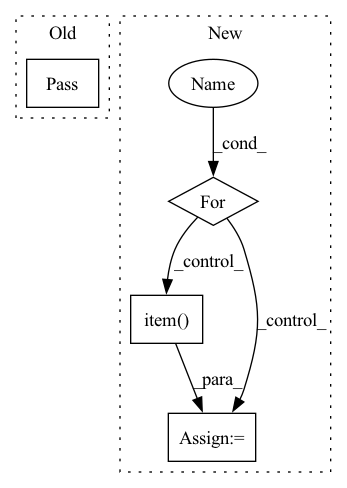

Pattern ID :42047

Before Change
self.augment_list = augment_list()
def __call__(self, image):
pass
After Change
self.replace_value = [128] * 3
def __call__(self, image):
for _ in range(self.n):
op_to_select = torch.randint(0, len(self.augment_list), [1]).item()
random_m = float(self.m)
for i, op_name in enumerate(self.augment_list):
prob = torch.zeros(1).uniform_(0.2, 0.8)
In pattern: SUPERPATTERN
Frequency: 3
Non-data size: 4
Instances
Fragment ID: 117760742
Project Name: ffiirree/cv-models
Commit Name: 754a292b406eff7391fc5f8b31d62a0d26beabd0
Time: 2021-09-26
Author: ice_qi@163.com
File Name: utils/augment.py
M Class Name: RandAugment
N Class Name: RandAugment
M Method Name: __call__(2)
N Method Name: __call__(2)
M Parent Class:
N Parent Class:
M File Name: utils/augment.py
N File Name: utils/augment.py
M Start Line: 36
M End Line: 36
N Start Line: 263
N End Line: 282
'>
Before Change
@staticmethod
def start(self):
pass
After Change
graph_encoder = GraphEncoder(graph)
self.loss_function = nn.MSELoss()
self.optimizer = optim.SGD(graph_encoder.parameters(), lr=0.001, momentum=0.9)
for epoch in range(self.epochs):
running_loss = 0.0
self.optimizer.zero_grad()
outputs = graph_encoder.forward(graph)
loss = self.loss_function(outputs, graph.node_features)
loss.backward()
self.optimizer.step()
running_loss += loss.item()
print("[%d] loss: %.3f" % (epoch + 1, running_loss))
print("Finished Training")
return running_loss
'>
Fragment ID: 117760743
Project Name: kovanostra/message-passing-neural-network
Commit Name: 006d64407b4a9ec5703e3b59ab2cd7c25bf6455b
Time: 2020-03-24
Author: kovanostra@gmail.com
File Name: src/usecase/train.py
M Class Name: Train
N Class Name: Train
M Method Name: start(1)
N Method Name: start(1)
M Parent Class:
N Parent Class:
M File Name: src/usecase/train.py
N File Name: src/usecase/train.py
M Start Line: 9
M End Line: 9
N Start Line: 15
N End Line: 35
'>
Before Change
train_loss += loss
if metrics:
pass
// metrics.update(output, y_batch)
// train_acc += metrics.result()
// metrics.reset()
else:
After Change
if epoch + 1 == 1 or (epoch + 1) % print_freq == 0:
network.set_eval()
val_loss, val_acc, n_iter = 0, 0, 0
for X_batch, y_batch in test_dataset:
_logits = network(X_batch) // is_train=False, disable dropout
val_loss += loss_fn(_logits, y_batch, name="eval_loss")
if metrics:
metrics.update(_logits, y_batch)
val_acc += metrics.result()
metrics.reset()
else:
val_acc += (_logits.argmax(1) == y_batch).type(torch.float).sum().item()
n_iter += 1
print(" val loss: {}".format(val_loss / n_iter))
print(" val acc: {}".format(val_acc / n_iter))
'>
Fragment ID: 117760744
Project Name: tensorlayer/tensorlayerx
Commit Name: 5a055c7e44c1c45757261cf1af36bbd6d37b80e0
Time: 2022-03-07
Author: laicheng_vip@163.com
File Name: tensorlayerx/model/core.py
M Class Name: Model
N Class Name: Model
M Method Name: th_train(11)
N Method Name: th_train(11)
M Parent Class:
N Parent Class:
M File Name: tensorlayerx/model/core.py
N File Name: tensorlayerx/model/core.py
M Start Line: 439
M End Line: 439
N Start Line: 431
N End Line: 481